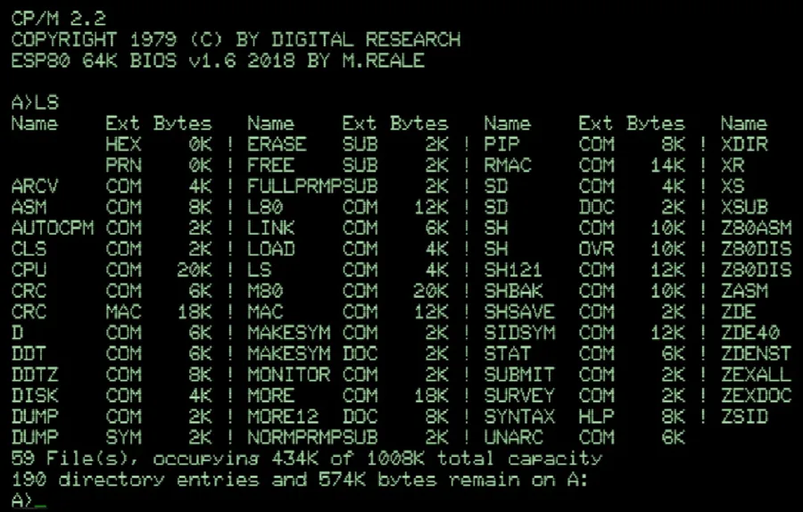
CP/M
Gary Kildall’s CP/M gave every 8080 and Z80 machine the same disk commands and file layout, so a program written for one could run on another. It was the standard business system until MS-DOS took its place.
Eighteen programs people actually loaded off the floppy, in four groups. Several were written in the 1970s and simply kept going; those carry a “Since” date.
The program that loads first and runs everything else. In this decade the choice of operating system decided which software you could buy.

Gary Kildall’s CP/M gave every 8080 and Z80 machine the same disk commands and file layout, so a program written for one could run on another. It was the standard business system until MS-DOS took its place.
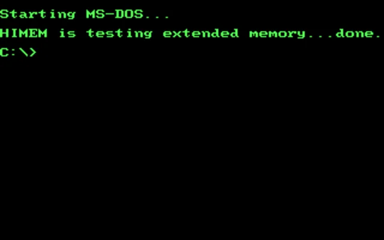
IBM licensed MS-DOS from Microsoft instead of buying it outright, which left Microsoft free to sell the same system to everyone who cloned the PC. That one contract built the company.
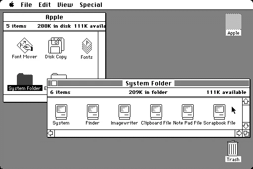
The first Macintosh system software had no command line at all, only windows, icons, folders and a menu bar. It fitted into a machine with 128 KB of memory.
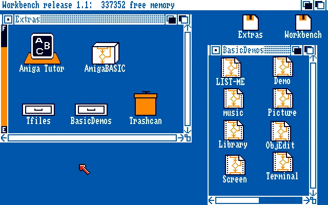
AmigaOS ran several programs at once, properly, on a machine with 256 KB of memory. Its Workbench desktop and its command shell sat side by side, both fully usable.
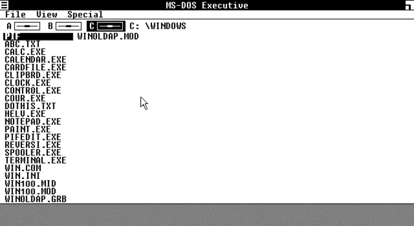
Microsoft’s first Windows was a graphical shell sitting on top of MS-DOS, with tiled windows that were not allowed to overlap. It sold poorly, but the line it started did not stop.
The software that justified the price of the hardware, and the reason offices bought personal computers at all.
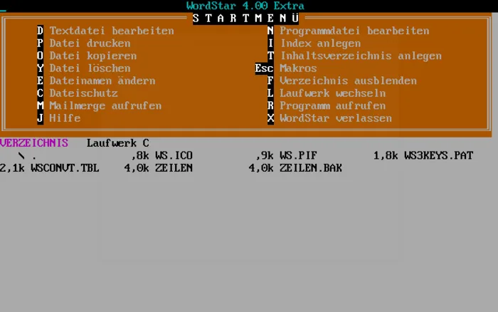
The word processor that taught a generation its control-key shortcuts. Writers kept using it long after it had lost the market, some of them for decades.
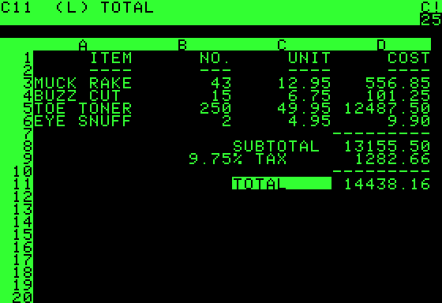
The first spreadsheet, and the first program people bought a computer in order to run. It turned the Apple II from a hobbyist machine into something a business could justify.
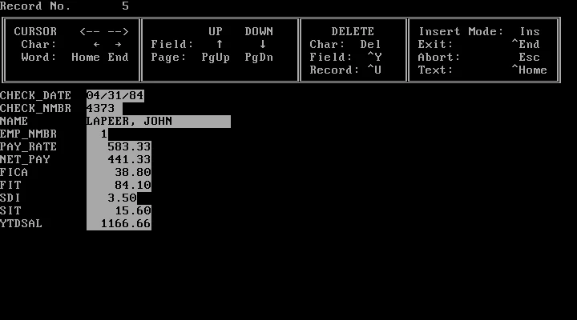
dBase gave small businesses a database they could build and program themselves, with no mainframe and no department to run it. dBase II arrived in 1980; this successor took the PC market and left behind a file format that outlived the product.
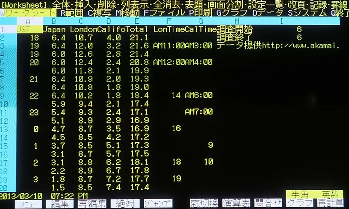
A spreadsheet fast enough to feel instant, because it was written in assembly language for the IBM PC and nothing else. It sold the PC to business more effectively than IBM managed to.
How people told the machines what to do. Most of these were already old by 1980, and all of them were in daily use through the decade.
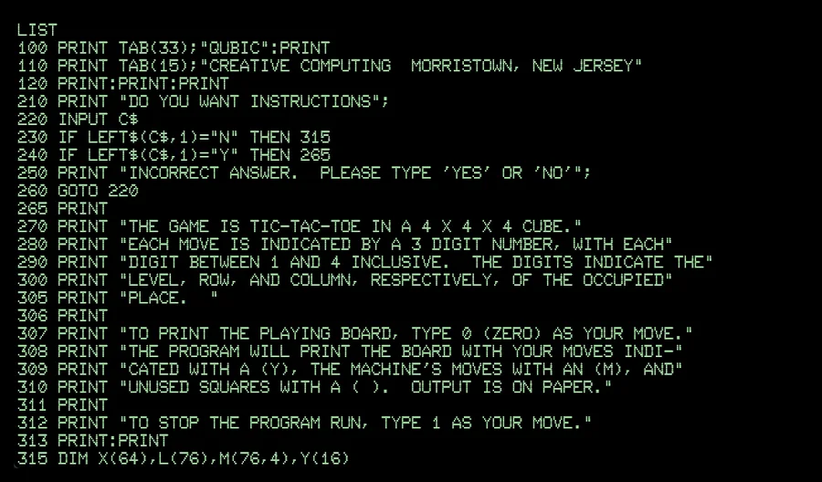
Most home computers started up into BASIC, so the first thing on screen was a prompt waiting for a program. For millions of people it was the first programming language, and often the only one.
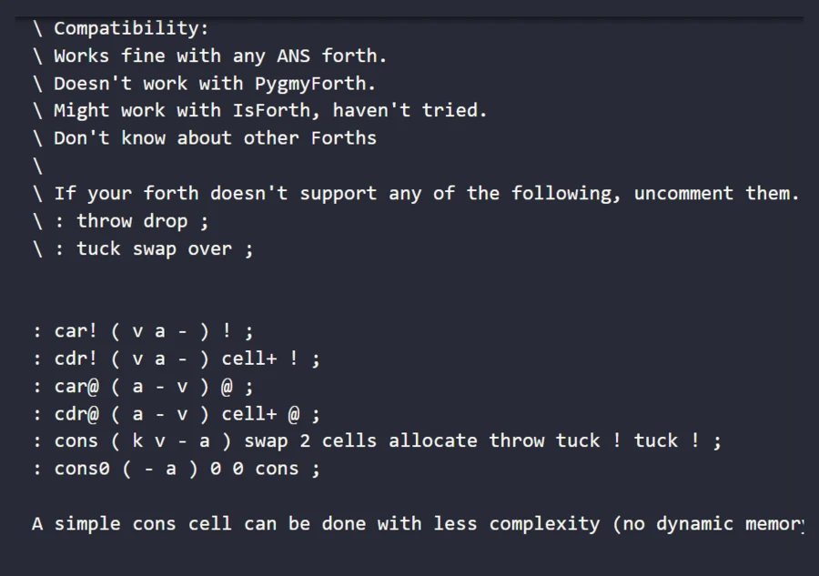
Charles Moore’s language fitted into very little memory and let you extend it with words of your own, which suited machines that had nothing to spare. In 1982 the Jupiter Ace shipped with Forth in ROM instead of BASIC.
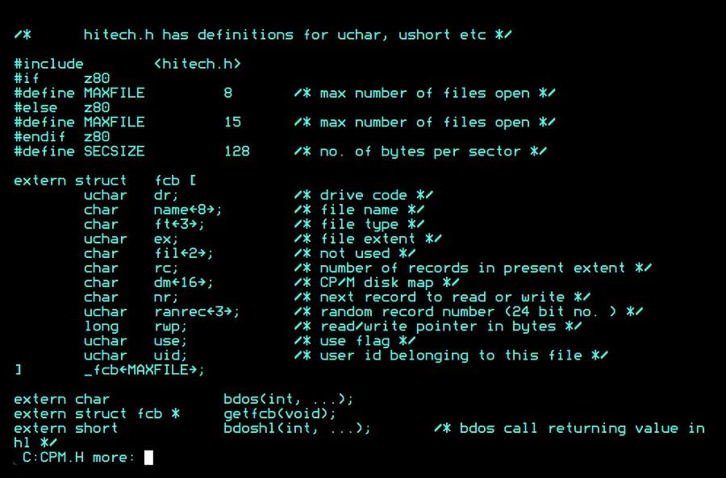
C sat close enough to the hardware to be fast and far enough from it to move between machines. Nearly everything written since has been built either with it or on top of it.
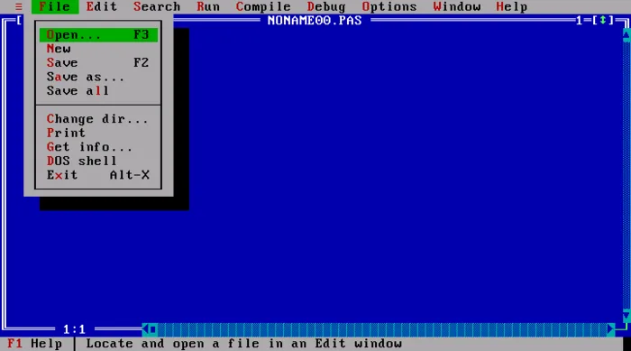
Borland sold a compiler, an editor and a linker as one program for US$49.95, when rivals were charging hundreds. It compiled fast enough that you stopped thinking about compiling.
What the machines did after hours, and for many households the reason there was a computer in the room at all.
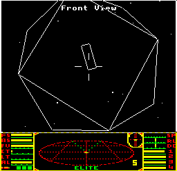
Elite fitted eight galaxies, wireframe 3D ships and open-ended trading into a 32 KB machine, with no set objective beyond staying alive and getting richer. Almost nothing else looked like it.
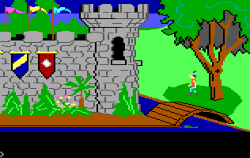
Sierra’s adventure let you walk a character around drawn scenes instead of reading descriptions of them. IBM commissioned it to show what the PCjr could do.
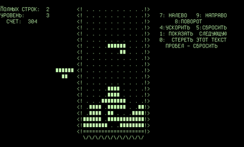
Alexey Pajitnov wrote it at a Soviet research centre on a machine with no graphics at all, building the blocks out of text characters. It reached most players in the West around 1988 and 1989.
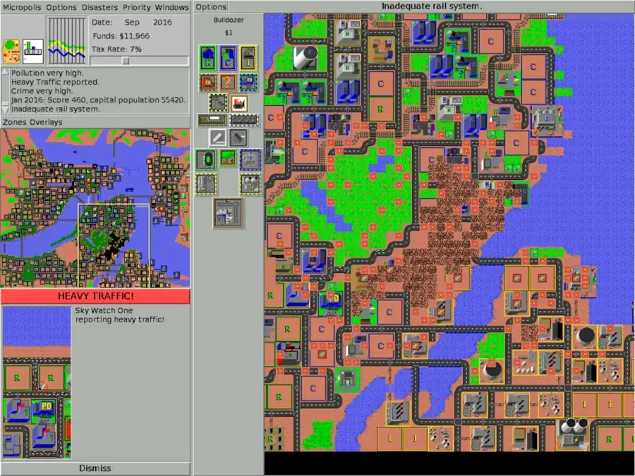
A game with no way to win: you zone, build, tax and watch what the city does with it. Publishers turned it down for years on exactly that ground.
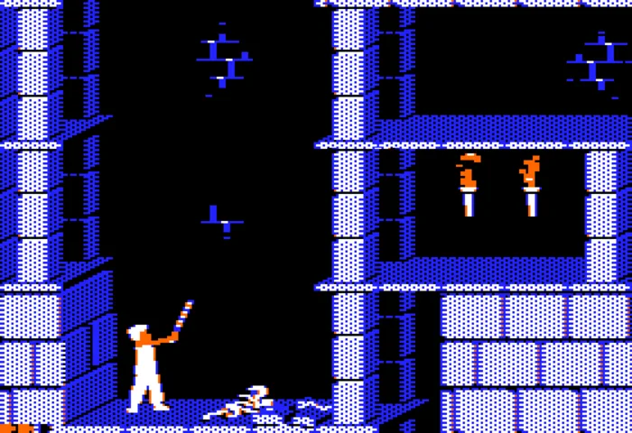
Jordan Mechner filmed his brother running and jumping, then traced the frames, so the character moved with a weight no other platform game of the time had.
Eighteen programs out of many thousands. If something important is missing, or a date or platform looks wrong, send feedback and it will be put right.
Send feedback